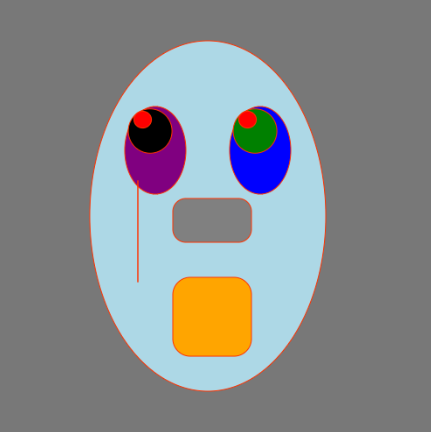

p5.js · Interactive sketch
Interactive Face
- Concept
- This is my basic face made with couple of shapes and functions. By connecting canvas elements with mouse position and clicks, the artwork feel playful and with a bit of chaos
- What I did
- In this sketch I divided it into 3 parts, the face, the eyes and the mouth and tears using basic geometric shapes. I also integrated the pupils with interactive mouse tracking (mouseX, mouseY) with the constrain() function and the random() function to give it more lively effect. And finally, I added the mouseIsPressed() function to change all of the face feature's color give it a more chaotic feel.
- What I learned
- This exercise was a good practice to get familiar with the basic shapes and functions for me. It was quick and simple some parts I found it challenging to implement the interactive elements